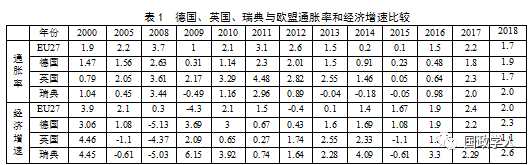
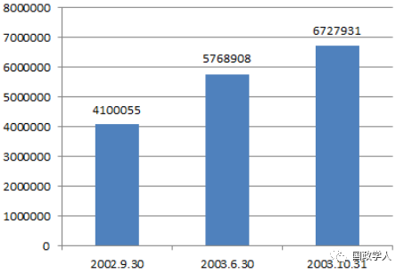

收录于合集

简 介
**
**
【作者】 郭海龙，中央党史和文献研究院(中央编译局)助理研究员（北京 100017）
【来源】 《科学社会主义》2019年第1期
内容提要
欧洲在全球经济危机的冲击下受到重创，但欧洲北部国家却很快克服（英国）或平稳渡过（德国、荷兰和北欧国家）危机，根本原因是这些国家进行过积极福利改革。其主要内容有：一是社会福利的精准化；二是劳动力市场供给、需求两侧的改革，分别涉及提升劳动者的质量和数量和为劳动力提供灵活就业的岗位并通过严格发放福利促进失业者灵活就业；三是福利管理制度的改善等。此外，这些积极福利国家还实施了配套的经济政策，并为推行改革进行了政治博弈，使得经济发展与福利民生实现了相互促进和共赢，这对其他国家有一定的启发意义。
关键词 积极福利 改革 精准化 劳动力供需 灵活就业
正文
二战后，欧洲以莱茵模式福利国家著称，然而，20世纪70年代的滞胀危机打破了这一美丽的神话。新自由主义革命则把福利水平降到了最低点，引发了社会矛盾。克服莱茵模式的福利国家弊端、借鉴新自由主义优势的“第三条道路”，积极推行积极福利改革，探索出了一条福利与经济发展共赢的道路。这样,西方国家经过四分之三个世纪的成败兴衰所探索出来的福利制度变革之路，值得后发国家在福利制度建设过程中有辨别地加以借鉴。
**1
**
欧洲积极福利改革的成效：稳定之锚
**
**
2008年以来，始于美国的金融危机不久便诱发了全球经济危机。欧洲饱受重创，西班牙、葡萄牙、意大利、希腊、爱尔兰被嘲讽为“欧猪五国”，法国则“法国病”持续。各国主流中左、中右政党均失策，民粹主义甚嚣尘上。背景是欧洲民众习惯了第一代福利国家高税收、高福利模式，在增长乏力、需削减福利等公共开支时，选民不愿降低福利水平，而主流政党缺乏建树，一些国家改革不顺，如希腊、意大利等国抵制改革，南欧国家沉重的主权债务和赤字仍在增加，失业率达两位数，青年尤甚。选民倾向于“取悦于民”的民粹主义。
然而，与南欧国家不同，德国、北欧国家及英国则在危机严重期间(2008-2012)经济表现相对良好(见表1，其中，英国在2013年之后，因苏格兰独立公投、脱欧等影响，经济有所恶化，另当别论)。“繁荣的北方国家的低增长和陷入困顿的南方经济体的经济衰退表明，财政紧缩计划已经达到经济和政治极限。”①南北分歧加大，欧元区更不稳定。在全球金融危机到来之前，北方国家已经相当成功地更新了政策以应对社会变迁。最突出的是北欧国家，这些国家危机之前更新了政策，进行社会投资型“就业转向”改革，欧洲福利改革是大趋势②，可以分为两类：
第一类：德国、北欧国家。它们注重探索更富弹性和韧性的社保制度，受冲击较小，经济始终良好(见表1)。
德国可谓“风景这边独好”：2003年开始“2010议程”福利改革，简化程序，提高效率，政府、企业和个人都更严谨、勤奋，让德国在危机中受影响较小，从1990年代的欧洲病夫一跃成为欧洲经济火车头，近乎一枝独秀，实现了“就业奇迹”，成为重债国家学习的榜样④。2010-2011年，德国实际GDP分别增长4.2%和3.0%⑤，远高于同期欧元区17国2.0%和1.4%的和“欧猪五国”-0.6 %和-1.3%的平均水平⑥。此外，德国财政可持续性大大提升，灵活就业增加、失业率下降，劳动力成本下降、产品竞争力提升。在全球经济危机背景下，德国出口和经济增长的状况佐证了改革成效。危机时德国主张的紧缩政策和欧洲稳定机制（EMS）成为欧盟公共政策，约束了一些成员国特别是“欧猪五国”低增长、高福利、高消费的行为。2008年以来，“欧洲先是通过凯恩斯主义来救火，之后是财政整顿，最后是先发制人的财政紧缩……欧洲首脑会议2011年12月通过‘财政契约’”⑦。这些是德国积极福利的主张。虽然当时法国奥朗德政府一度带领南欧国家对萨科齐向默克尔紧缩政策的妥协进行了“适当调和”⑧，出现了反弹，但不合时宜，德国主张最终成为全欧政策主基调，在英国脱欧影响下，受民粹主义干扰最小的德国成为欧洲稳衡器，默克尔被认为是欧盟核心领导人。

数据来源：本文根据欧洲统计局网站，http://epp.eurostat.ec.europa.eu/以及新浪财经，http://finance.sina.com.cn/worldmac/nation_SE.shtml#indicator_NY.GDP.MKTP.KD.ZG.shtml;http://finance.sina.com.cn/worldmac/nation_SE.shtml#indicator_FP.CPI.TOTL.ZG.shtml整理而成
北欧国家对公平与效率进行了新型良性组合，主要是不断扩大积极福利的范围，减少干预，推动社会组织承担社会职能，促进社会服务市场化。积极完善和创新社会服务，缩短社保和救助期限、增强针对性并引入制裁措施。北欧已经位于从经济竞争力到社会健康和幸福感排行榜的榜首，北欧既避免了南欧的经济僵化，也避免了美国的极端不平等，为世界各国，特别是背负重债的西方国家，提供了如何使政府更有效和灵活的改革蓝图。由于大多社会救济与收入相关联，北欧的福利制度在保障之上添加了约束机制，从而在道德伦理方面形成了鼓励工作的内在激励机制，即个人不易出现恶意依赖福利制度的懒汉行为。
第二类是英国。英国是第一个福利国家、也最早福利改革。从“撒切尔革命”到“第三条道路”，就业目标已从第一代福利国家“充分就业”调整为“促进就业”，是莱茵模式调整的“起始点”。20世纪90年代后，其改革传播到瑞典、德国、荷兰。布莱尔政府改革成效显著，1997年以来，英国经济持续增长，GDP年均增长2%左右，居西方前列；人均工资保持了4%的增长；年均失业率仅为4%左右，明显下降，处于1970年代后的最低水平，年轻人及单身父母就业率都创新高，英国失业率远低于同期多数欧洲国家。不过，英国在危机初期的情况较差(见表1)。原因是英国金融业发达、占经济比重高，且英国经济与世界尤其是与美国同步性较强，受冲击严重；好转正显示了改革“红利”。这说明，要解决问题只能靠进一步改革，改革是个动态过程，不能一劳永逸。
上述国家在积极福利改革方面具有共同特质并非巧合，而是具有深厚的政策和理念基础。早在1999年《布莱尔—施罗德文件》（全称《欧洲社会民主主义者的前进道路》）就开始倡导积极福利，在社会政策方面脱离传统社会民主主义更多以需求为导向的战略，转向更多以供给为导向的战略，这一值得推崇的理念代表了福利改革的趋势。这样，“莱茵模式”（“市场经济+总体调节+社会保障”）的德国与撒切尔革命后“盎格鲁- 萨克逊模式”（ “私有化+放松管制+低福利”）的英国开始趋同，并影响着未来，对改革中的社会主义国家也不乏借鉴意义。
**2
**
欧洲积极福利改革的内容：发展利器
“积极福利”是1990年代“第三条道路”的政治主张。其背景是，二战后三十多年（1945-1979），第一代福利国家存在着消极影响：政府负担重，高税收影响效率、不利于投资；个人积极性低，影响创新；大批懒汉游手好闲，对辛勤工作的纳税人不公平。福利制度被认为是“寄生的社会主义(creeping socialism)”，使弱者越来越依赖政府，造成开支庞大，削弱了竞争力。而强调社会公正往往与追求结果公平相混淆，后果是忽略了积极奋斗和责任意识，缺乏对创新性、差异性和卓越性的鼓励 。新自由主义克服了这一弊端，却因“一刀切”式削减福利导致两极分化、社会矛盾尖锐。同时，资本借全球化躲避福利义务⑫，使福利制度面临挑战：低福利、义务少的美国和新兴国家成为投资优选，全球化强化了资本、税收竞争，导致福利国家财政困难⑬。竞争性减税“竞次(race to bottom)”虽经不起审视⑭，却构成了“外压”：资本能全球化，福利却不能。因此，“积极福利”才得以出台。
（一）社会福利的精细化
“积极福利”的“积极”是指缓解财政压力，不再无限提供福利，将一些责任转移给雇员或社会伙伴，并降低商业收费和人工费，通过精准福利避免动荡，对有劳动能力者通过严格发放失业金促进就业，但不盲目削减福利。
第一，在社保和救助领域，福利水平下降、补助期限缩短、资格审查更严，覆盖面缩小。如英国在1997年提出了“效能化福利国家”政策，大多社会救助只对有薪酬劳动者开放。
第二，调整养老金这一最难变革的领域。如丹麦和芬兰将工作与退休金相结合，瑞典则把养老金与预期寿命、净工资挂钩，同时保证低收入者获得普遍的养老保险⑯，德国既削减了养老金支付水平，又在养老金计算公式中引入“可持续因子”，使养老金增幅低于工资增幅，在保证权益的同时降低养老负担。
第三，收窄失业救济条件并增加培训和教育投入，促进就业。“第三条道路”主张“工作福利”，把权利与义务“促压结合”（Fördern und Fordern），促进失业者工作、提供相应的救助和计划。《布莱尔—施罗德文件》指出，要消除障碍创建新工作岗位⑱：一是减少补助类型、简化领取条件，如英国、荷兰、德国、丹麦、比利时等。二是救济金与促进就业挂钩。凡失业超过一定期限，自动降低失业救济，即“不劳动，少救济”，以惩罚消极求职者。改革更能促进就业：荷兰增加了对残疾人、单身母亲和老年工的就业要求⑳，丹麦和瑞典收紧条件，增加了求职义务㉑。健康者要获得社保，必须参加培训和咨询，并履行求职等义务㉒。
德国2002-2006年实施的四个哈茨方案，核心内容是放松对企业的用工限制、促进就业、提高失业保险的领取门槛。其中，“失业金I”与失业前的收入挂钩。“失业金II”与失业前的收入没有关联，对领取者实施统一标准，是一种普惠制的失业救济。哈茨IV缩短了“失业金I”领取时限（从26个月降到12个月；超过55岁者，从32个月降到18个月）。领取“失业金II”者有接受“一欧元工作”公益工作的义务，若拒绝，则3个月内扣减“失业金II”的1/3；若无故拒绝者低于25岁，则停发“失业金II”。只要中介机构提供的工作不违背道德，即使该工作与技能不符，失业金领取者也必须接受。这意在让失业者保持工作状态，便于雇佣，并提供了公益补贴㉓。
英国也类似。布莱尔政府的改革旨在“让工作有价值”，让“劳酬”相当，以提高竞争力，避免“只享福利不工作”的顽疾㉔。卡梅伦政府继续改革：一是对“由福利到工作”进行改革：失业者12个月内必须工作；25岁以下失业者最多延长6个月也必须工作。只有再就业一定期限（灵活就业的13周，全职的26周）后才对雇主补贴；二是推出“普遍信贷”（Universal Credit），将求职补助、就业支持补助、儿童税收信贷、收入支持和房补等合并，意在将福利与工作挂钩。
以丹麦为代表的北欧“灵活保障（flexicurity）”模式成为治愈“北欧病”的处方。灵活保障整合社会政策和劳动力市场，根据公司需求增加劳动力市场灵活性；同时，通过激励性社会政策促进人们就业。这意在帮助失业者再就业，使福利体制焕发活力，促进了效率和公平双赢。
（二）从劳动力市场供需两侧进行改革
1．鼓励灵活就业
一方面，政府鼓励灵活雇佣。“以市场为基础限制工资，以提高竞争力、提升利润、促进就业……使规则更加朝向‘雇佣友好’。”㉖这促进了改革，欧元诞生的准入考察在欧元区社会福利改革中发挥了关键作用。大多欧洲国家在劳动力市场方面开支速增，失业率下降，政府实施针对性和有条件的津贴，增加了妇女、年轻人、老年工人和生产力下降工人的流动性。积极劳动力市场得到了培育，失业救济大大下降。
 图1 2002.9-2003.10德国从事低薪（月薪低于400欧元）工作的人数㉗
另一方面，劳动力市场趋向弹性。如丹麦劳动力市场引进积极因素产生了“灵活保障”模式，将灵活的劳动力市场、慷慨的失业津贴与积极的劳动力政策三者结合起来，以减少失业，提供优质、充足的劳动力，改变日益增长的应急工作供过于求、而失业者不愿工作导致劳动力供给不足的状况㉘。
这大大提升了就业率，缓冲了危机。在英国和北欧，高达75%-80%的适龄人口就业，25-54岁妇女就业率飙升㉙。德国则如图1所示：危机前，2002年9月-2003年10月，灵活就业政策激发了低薪工作，2003年4月1日低薪工作法出台后，到2004年已新增100万个低薪岗位。
这样，在全球危机到来之前，福利制度改革已见成效。只要有效，欧洲国家就能承担改革后的社会保障。危机之前，明智的改革是长期竞争力增长和谨慎财政背后的关键推动因素。
2．在劳动力的质和量上下功夫
欧洲的劳动力市场变化很大，后工业化社会为女性提供了工作机会，但使得中低端技术工作大大减少、终身工作的稳定性降低，尤其是女性和年轻人越来越不稳定。相关的是，许多政策帮助协调工作和家庭生活关系，同时促进更多妇女就业。这些都反映出政策取向趋于朝双薪养家模式转变。这造成了高技能、工作无忧的双薪家庭与低技能、缺乏工作的男性家庭及单亲家庭之间两极分化。劳动力质和量的影响表现在：一是智力不足，创新会不足；二是劳动力紧缺，成本会上升。而延迟退休、鼓励妇女就业、加大培训力度，可扩大就业、鼓励创新、降低成本。这方面主要有以下举措：
一是延迟退休，使60出头、身体许可者发挥余热，增加劳动力供给，激发经济活力。如德国2012年已经实现退休年龄从65岁延至67岁㉚。为增加劳动力供给，欧洲政治家还招徕移民、甚至是难民，如引起巨大争议并使默克尔2018年决定隐退的难民政策，一度对难民来者不拒，以补充劳动力。
二是鼓励妇女就业。许多政策协调工作和家庭并促进妇女就业，向“双薪养家模式转变”。如德国政府增加3岁以下儿童的教育投入，为父母税收优惠并增加学校的投入，使家长放心工作。再如，英国用“工作家庭税收津贴”(WFTC)取代家庭津贴，优先照顾有孩子的工作者，其次是无孩子的工作者，最后才是无工作者。
三是对求职及在岗者加大培训力度。岗位培训意在促进创新、提升效率和技术，开拓经济领域和增长空间，让产品更优，提升竞争力。“新趋势新颖之处在于将人力资源投资和更强工作激励机制结合起来。”㉝在培训方面，德国为年轻人提供特殊职业教育，由企业中有经验者授课，提高职教针对性，提高参与职业教育的积极性与实际效果。无独有偶，英国改革以教育和培训为主，以提高技能、摆脱福利依赖，奠基高附加值经济，影响最大的“青年新政”（撒切尔时代唯一扩张的福利，布莱尔、卡梅伦政府进行了延续）规定：18-24岁连续领取失业金6个月以上者，若不参加，将停发救济；即使参加，若违规或退出，将减免救济。“工作福利”加之经济良好，使英国就业达到了30多年来最高水平，提升了青年培训需求㉟。
（三）改革福利管理体制
随着福利供给内容的支付方式大变，福利管理也大调，这方面英国比较典型。
一是设置公共就业机构。英国工作与年金部设立“工作服务中心”，负责就业服务、代理补助和社保。该中心以现代通讯技术为基础，分四个层级建1000多个覆盖全国的就业服务网点。网站每周都有百万访问量，求职者可在该中心浏览各类信息或热线求助，获得帮助。该制度效果良好：即使衰退，75％的人6个月内就业，90％的人12个月内就业，很多私营机构都愿与该中心合作招聘。
二是着眼顶层设计。这涉及地方变革、行政改革及“重绘”政策㊲。最重要的尝试是将社保、救助和劳动力政策进行“一站式处理”，结束社保和就业管理分离、机构重叠的状况。其中的治理创新，趋势是分权、市场化和更具竞争性、注重合作和创新管理㊳。
三是从维持收入计划向提供福利服务转变。伴随着新型公私混合体制提供本地合格社会服务的个性化和定制化，新福利体制要求管理和实施具备高水准，在职业指导、(再)培训和再就业、儿童和老年护理方面满足特殊需求并适应不同情况，即家庭责任、商业市场社会服务以及公共服务的分工已全部重新安排㊴。
**3
**
欧洲积极福利改革要件：政经博弈
**
**
积极福利改革的成功，离不开经济政策配套，以及改革的政治决心和政治代价。
（一）配套的经济政策
欧洲积极福利改革非常重视经济政策配套，推动了经济发展，缓解了危机。英国重视在金融业之外开拓新经济，重点加强旅游、交通、商业服务、信息科技、教育和创意产业等领域，这些成为英国经济的主要驱动力。此外，英国积极顺应中国崛起，打造“人民币离岸中心”，在西方国家中率先加入亚投行，并积极响应“一带一路”倡议，为经济提供外力。
德国推出“工业4.0”以保持实体经济创新和领先势头，与“中国制造2025”对接，积极推动出口，与中国等贸易大国良好合作，被称作“天然盟友”㊷。
北欧国家审时度势，通过提升教育、强调研发，发展智力密集型经济的战略跻身竞争力强国之列。在加强教育投入的同时，不断加大对高新技术研发投入，在GDP占比高于其他发达国家。北欧国家经历了从制造业向服务业和知识经济的转型，为迎接全球化做好了准备㊸。
总之，积极福利和配套经济政策，促进了这些国家在全球危机冲击下表现良好，成为发达经济体的亮点。
（二）改革的政治博弈
工作、家庭、两性关系、公平分配和社会融合等方面的新价值观，促使上述国家实行积极福利。同时，人口老龄化、去工业化、家庭作用的改变，导致福利改革总是伴随着社会冲突；改革产生新问题，使变革之路不平坦。不过，难题推动了改革再出发，在德、英等国，改革在反对党、工会和雇主组织中形成了广泛共识，获得了广泛支持。
德国养老金领取者2001年抗议施罗德政策说明了变革之艰辛。当时，在施罗德连任并提出“2010议程”后，党内批评人士启动了抵制改革的请愿。但毅然决然的施罗德把个人前途与改革捆绑在一起，使反对人士不敢用太严厉的批评来威胁社民党的执政能力；政府则采取措施，降低改革负面效应并应对新问题。然而，改革还是给社民党带来巨大影响：一方面，它导致社民党分裂，2004年工会人士在拉方丹带领下从社民党分裂出来组建了“劳动与社会公正选举联盟”，并于2007年与民社党合并为左翼党，这种损伤至今未恢复：后面四次大选社民党连连失利，默克尔成为任职时间最长的德国总理；另一方面，社民党内对“2010议程”一直有不同意见。对此，施罗德表示：现在，我们必须拿出勇气，在我们国家进行必要变革，以使我们在欧洲重回经济与社会发展之巅。施罗德本人也做好了改革必须有短期阵痛的准备，甚至宁愿付出“丢掉总理宝座的代价” ㊺也不愿意牺牲德国长远利益。结果，反对党领袖默克尔2005年取代施罗德担任联邦总理。而联盟党虽批评施罗德，但对“2010议程”并无太大意见，默克尔在施罗德下台后深入推行“2010议程”，在当年11月30日政府声明中感谢施罗德，因为他克服阻力实施改革，果断开启了改革之门。“2010议程”对重建德国竞争力作用巨大，德国目前劳动力市场和经济积极发展，施罗德改革作用不容否认㊻。默克尔延续改革时也一定程度上抛弃了党派之见，使改革进展较大㊼。这样，虽政党轮替，积极福利改革是两党共识和施政基调，为经济发展及危机时的良好表现奠定了基础。正如德国学者所说，改革后即是改革前㊽，改革是不断推进的动态过程。
英国情况类似。经济全球化和全球危机扩大了两极分化，使得对原有福利的任何削弱都较敏感。反全球化运动方兴未艾与此密切相关。而卡梅伦政府在改革中提高税费、削减福利曾引起大学生、公务员和教师的抗议。但纵观英国30年改革，其改革基本理念和措施均已超越政党纷争，成为左右翼“新共识”，即媒体总结的“布莱梅伦主义”，是继“巴茨克尔主义”“布莱切尔主义”后，英国两大政党在新世纪形成的新共识。这方面有一鲜活例子，2009年工党政府对年收入超过15万英镑者征收50%的“富人税”，被视为富人代言人的保守党党首卡梅伦对此明确表示支持㊾。
此外，在福利改革过程中，北欧国家的“社会伙伴协议”影响重大，工会、雇主协会和政府在结构调整、继续学习和技能发展、劳动力市场保障的公共政策等方面协调合作，对竞争力和社会可持续性高度负责㊿。因而，积极福利改革成效显著。
而在法国，凝聚左右共识、对“第三条道路”颇有心得的马克龙派先后赢得总统和议会选举，也为医治“法国病”提供了契机。因为“法国病”的肇因也正是高税收、高福利模式难以为继。而积极福利改革本身就是“第三条道路”的核心内容和创新之处，有助于削减开支，降低税负，提升经济。
**3
**
欧洲积极福利改革的启示：他山之石
从外部看,危机能为改革定向、提供机遇，即“危中有机”。1930年代大萧条和1970年代滞胀危机都促进了改革。上述积极福利改革对中国完善社保体系、推动经济发展有一定的启示。
（一）福利制度要与国力相称
完善福利制度意在提供社会安全阀并刺激“内需”，开拓国内市场潜力，减少对外依存，保护经济安全。1990年代以来，我国内需不振一直是难题，原因很多，但福利制度不健全是其基础因素。我国福利水平一直较低，而缺乏保障，在量入为出的观念影响下，人们消费不振，甚至消费萎缩，影响着经济发展，第一人口大国的市场潜力远未充分挖掘。
要刺激消费、拉动增长，需要进一步完善社保障，解决人们的后顾之忧，鼓励消费，从而挖掘国内市场潜力，提供内需。内需不振的另一结果就是，中国大量产品不得不销往国外，依赖国际贸易，经济对外依存度长期居高不下，外贸曾占经济的一半以上，而国际市场一旦有风吹草动就会对我国产生巨大影响，不利于经济安全。降低对外依存度，要提高国家经济安全系数，也需要完善福利制度以开拓国内市场。
与此同时，应深刻认识到，虽然新世纪以来我国呈现出新的阶段性特征，但我国是发展中国家的事实将长期不会改变。为此，我们一方面要完善福利制度以扩大内需、刺激经济；另一方面要使福利制度与我国的国力相称，避免西方国家第一代福利时期一些执政党为了连任而不顾实情盲目扩大福利开支导致入不敷出、寅吃卯粮的窘况。鉴于此，在完善福利制度的同时，应注意福利制度要与国力相称。
（二）实施精准福利
积极福利改革，实质是摆脱第一代福利国家“消极养懒汉”福利供给模式、使福利制度促进发展、提高劳动力素质、提高劳动者积极性的一种变革。积极福利改革使“福利”这一概念获得了新生，实现了经济发展与民生福利的互相促进，实现了双赢。
借鉴积极福利改革，应巧妙搭配福利政策，在完善福利制度（民生建设）过程中要避免第一代福利国家“养懒汉”的前车之鉴。应破除“福利拖累经济”的陈旧观念，把福利制度与促进就业、提升职业技能等挂钩，实现福利（民生）与经济的相互促进、相得益彰。
例如在精准扶贫方面，需要在扶持对象、安排项目、资金使用、措施到户、驻村工作、脱贫效果等方面精准发力、精准落实。只有实施精准的福利政策才能在保障社会稳定团结的基础上，通过变“输血”为“造血”，将扶助与以技能培训、推荐工作为手段的促进就业活动挂钩，通过民生建设促进经济发展，推动经济与民生相互促进。
（三）推进供给侧改革促进经济政策配套
实施福利政策，促进民生建设，“功夫全在画外”。重视经济政策与福利制度改革的配套，就需要继续以“中国制造2025”推进供给侧结构性改革。
与国内市场需求不振并存的现象是：中国人喜欢“疯抢”国外的商品，如在日本抢购马桶盖、海淘奶粉等。在国内人们也iphone、爱马仕、高档轿车等进口货。这表明，中国一部分工业所产非所需、所需非所产。我国一方面制造了大批低端产品，“中国货”如同当年工业化起步时期的“德国货”“日本货”一样，被认为是“低劣产品”的代名词；另一方面，高端产品缺口很大、供不应求，有的高新技术存在被国外“卡脖子”的窘况，这就需要在客观上大力实施供给侧结构性改革。这方面，可以学习以往“两弹一星”的宝贵经验，集中攻关，攻克一系列高新技术难题；同时，促进高新科技产品向民用转化，建立拥有自主知识产权的高新科技系统。
大力实施“中国制造2025”正是促进产业升级、推进供给侧改革的核心内容。这需要进行广泛的改革动员,凝聚各界共识,让改革成为全社会的最大公约数。改革是第二次革命，供给侧改革更是促进我国经济持续发展的关键一招和战略举措，需要在凝聚社会共识的基础上，以“壮士扼腕”的决心来推行。
只有经济政策配套，才能为实施精准扶贫等福利制度建设提供良好的经济基础和氛围，从而使福利制度的完善能够发挥出更大的经济效益和社会效益。
（四）提升劳动者质量
针对下岗人员进行再就业培训、针对大学毕业生和在岗人员进行职业技能培训，通过提升劳动者质量为技术创新和转型升级提供人力保障，是提升劳动者质量的重要途径。我国经济面临转型升级，劳动者的数量在我国有保障，这也是我国产品保持国际竞争力的一个原因；但人口“红利”正在消失及我国转型升级对技术创新的要求，更需要通过提升劳动者质量等及时释放改革“红利”。
这可以通过失业保险与再就业培训挂钩，政府对企业补贴与在岗人员培训挂钩，以及对参加职业培训的大学毕业生进行补贴等方式来开展。除此之外，可以仿效德日二战后崛起时做法，大力发展职业技术教育（职业教育被认为是德国崛起的“秘密武器”53），适当压缩因盲目扩招而泛滥的本科教育，为大量青年提供社会需要的专业技能，这是劳动力市场改革的应有之意。这需要为职业教育提供充足的资质、进行务实的专业设置、提供资格认证、提供优厚的入学条件、在社会上进行“正名”等相关措施。
总之，福利国家改革并非一帆风顺，欧美国家的社会福利体制改革处在一个艰难的时期。而积极福利改革打破了“福利拖累经济”的教条认知，使得福利制度成为促进经济发展、提高劳动力素质、提高劳动者工作积极性的一种新颖的制度安排。让经济与民生（福利）相得益彰，克服或减缓了经济危机的负面影响，这是值得深入研究和积极借鉴之处。
_ ** _ 荐稿邮箱：guozhengxueren@163.com**
更多阅读
【重磅速递】约瑟夫·奈：美国霸权的兴衰：从威尔逊到特朗普 | 国政学人
【重磅推荐】巴里·布赞：英国学派视角下的中国崛起 | 国政学人
【重磅速递】米尔斯海默：注定失败：自由主义国际秩序的兴衰 | 国政学人
【国际组织】IO杂志：联合国维和行动的武力运用问题研究 | 国政学人